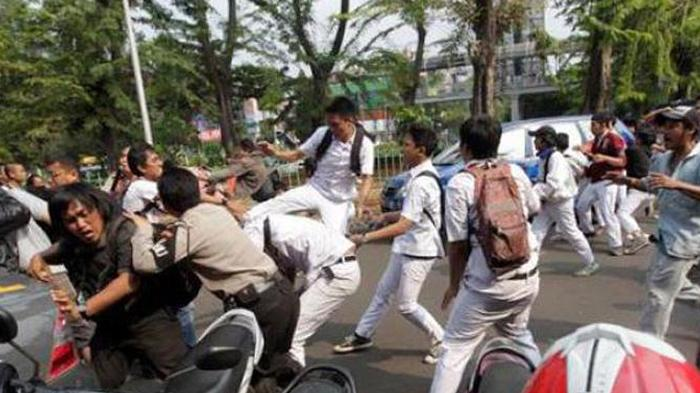
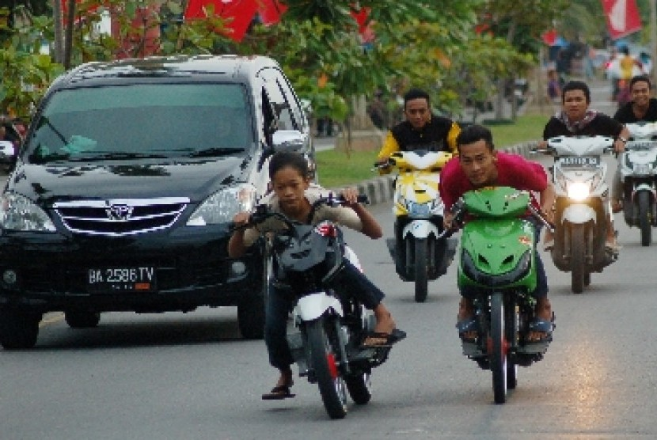
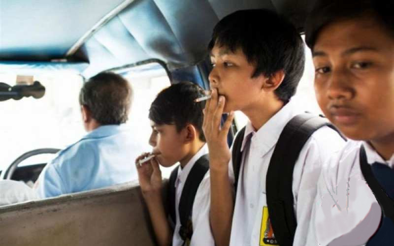
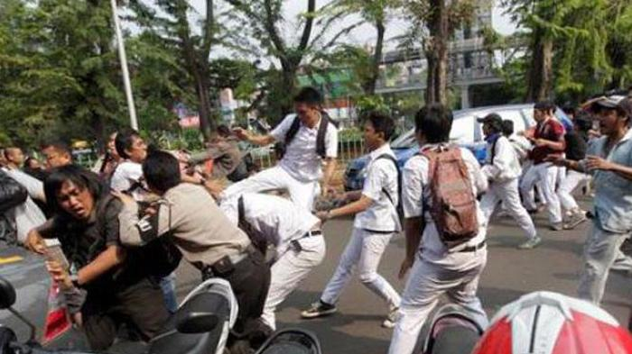
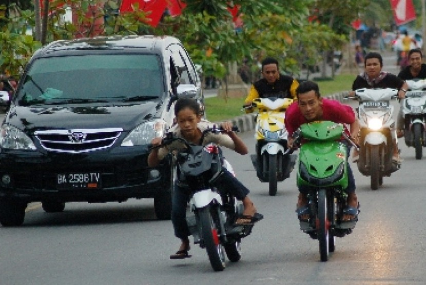
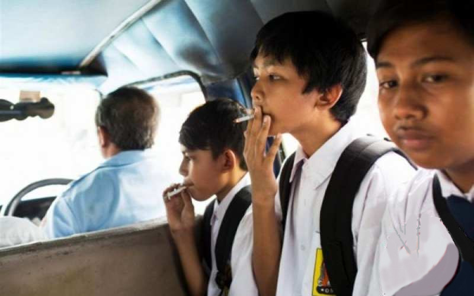

- Pernyataan Umum
Remaja ialah usia manusia dalam rentang 13 sampai 18 tahun. Pada masa tersebut, akan tumbuh keinginan kuat untuk mencoba beragam hal baru demi menemukan jati diri. Akan tetapi, banyak yang akhirnya justru melakukan hal menyimpang. Masa remaja, adalah masa dimana seorang manusia sedang berada dalam pencarian jati dirinya, ingin mengenal siapa dirinya sebenarnya. Seorang manusia dikatan remaja, jika ia sudah menginjak usia 17 tahun. Dan dalam usia ini, seorang manusia mengalami masa yang dinamakan masa pubertas. Saat pubertas, biasanya manusia ingin mencoba segala suatu yang baru dalam hidupnya, muncul berbagai macam gejolak emosi, dan banyak timbul masalah baik dalam keluarga maupun lingkungan sosialnya. Bentuk kenakalan remaja banyak sekali, antara lain : Narkoba, free sex, tawuran, pergaulan bebas, dll. Kenakalan remaja kebanyakan dilakukan oleh mereka yang gagal dalam mengembangkan emosi jiwanya, mereka tidak bisa menahan diri terhadap hala baru yang masuk ke dalam dirinya, yang menimbulkan sikap yang tidak seharusnya dilakukan. Kenakalan remaja adalah wujud dari konflik yang tidak terselesaikan dengan baik pada masa kanak-kanak maupun pada saat remaja. Kenakalan remaja adalah pelampiasan masalah yang dihadapi oleh kalangan remaja yang tindakannya menyimpang. Menurut ahli sosiologi Kartono, Kenakalan Remaja atau dalam bahasa Inggris dikenal dengan istilah juvenile delinquency merupakan gejala patologis sosial pada remaja yang disebabkan oleh satu bentuk pengabaian sosial. Akibatnya, mereka mengembangkan bentuk perilaku yang menyimpang. Sedangkan menurut Santrock “Kenakalan remaja merupakan kumpulan dari berbagai perilaku remaja yang tidak dapat diterima secara sosial hingga terjadi tindakan kriminal.”
- Urutan Penjelasan
Kenakalan remaja bisa terjadi secara perorangan maupun kelompok. Setiap tindakan ini sudah tentu akan memberikan dampak buruk entah untuk diri sendiri atau orang lain. Bukan hanya itu saja, bahkan dapat menyebabkan tindak pidana kecil sampai besar. Kenakalan bisa berupa bullying, vandalism, pemalakan, pergaulan bebas hingga tawuran yang mampu menyebabkan kematian. Banyak sekali faktor yang membuat mereka berbuat nakal. Misalnya saja faktor internal keluarga kurang baik, korban broken home, kondisi perekonomian keluarga dan lain sebagainya. Faktor lainnya berupa faktor eksternal. Misalnya saja teman pergaulan yang membawa dampak negatif, kurangnya kepedulian masyarakat, kurangnya pengawasan lembaga pendidikan dan lain sebagainya.
- Interpretasi dan Penutup
Bisa diambil kesimpulan bahwa kenakalan remaja ialah suatu aktivitas negatif yang mampu membawa kerugian bagi diri sendiri maupun orang sekitar. Hal tersebut bisa disebabkan oleh faktor internal dan eksternal sehingga penting bagi keluarga untuk membimbing remaja. Berdasarkan contoh teks eksplanasi fenomena kenakalan remaja di atas, apakah kamu bisa mengenali dengan mudah isi dan strukturnya? Sepertinya cukup mudah memahami pengertian dan faktor penyebab terjadinya kenakalan dari naskah tersebut.
 




